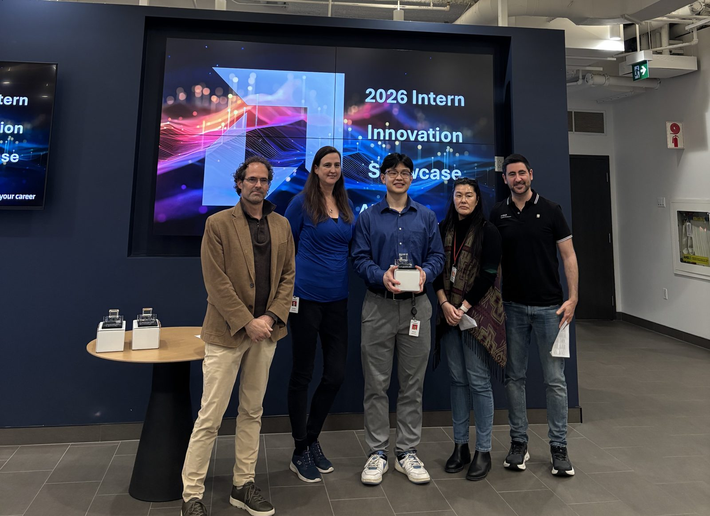
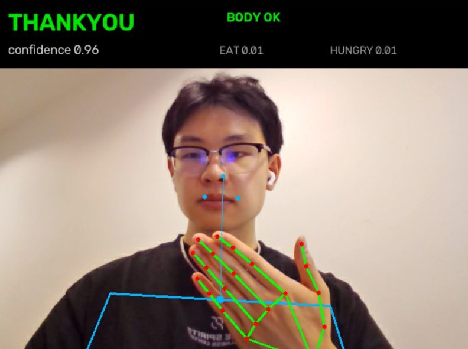
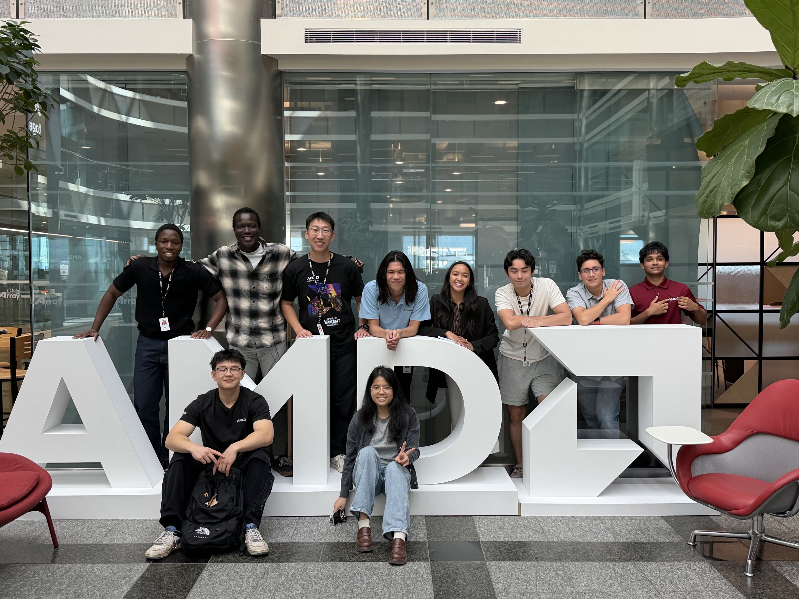
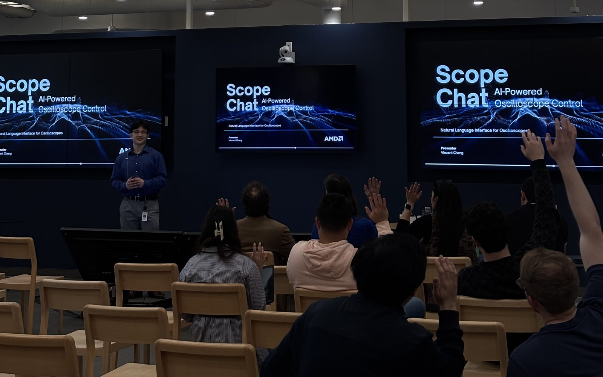

Eye diagrams, on the bench. Board bring‑up and post‑silicon validation with oscilloscopes and lab equipment, capturing eye diagrams and receiver lane margining data to verify compliance with design specs.
Vincent Cheng
SerDes validation at AMD. AI tools on the side.
Available for full-time roles in 2027.1
Meet Vincent Cheng. A Computer Engineering student passionate about hardware and software: validating high‑speed PHYs on silicon, designing digital systems from the gates up, and building AI tools like an oscilloscope you can talk to and a model that reads sign language.
Get the highlights.
-

Winner of the AMD Intern Innovation Event, with ScopeChat.
-

Reads 27 ASL signs. 92% accurate on signers it has never seen.2
-
Sixteen months validating USB, PCIe and DisplayPort PHYs at AMD.
AMD · May 2025 – Aug 2026
Hardware validation.
Down to the silicon.
For sixteen months as a SerDes PHY Hardware Validation Engineer Intern at AMD, Vincent helped integrate and validate third‑party USB, PCIe and DisplayPort PHY IP on AMD SoCs, from pre‑silicon development all the way to post‑silicon debug on the bench.
16 months
of SerDes PHY hardware validation
AI tools
for signal integrity analysis and automation, adopted by the team
Pre + post
silicon, from bring‑up to bench debug

AI tools the team actually uses. An LLM‑based signal integrity report analysis tool, plus workflow automation adopted by the team for PHY debug.
Root cause. Found. Led a signal integrity investigation with an external IP vendor, isolated a link failure through controlled experiments, then validated the firmware fix on silicon.
Python and C, down to the register. Scripts for PHY register access and configuration across Windows and Linux, supporting USB and display link validation.
Firmware, encrypted. Developed and ran the firmware encryption process for USB, display and PCIe IP across the 3PIP team, so it could be integrated onto SoCs securely.
- Python
- C
- C++
- Linux
- Oscilloscopes
- BERTs
- Jenkins
SignBridge · Engineering Capstone
A camera system
that reads sign language.
SignBridge is the recognition half of a capstone AI communication kiosk. MediaPipe hand and body‑pose landmarks go in. One of 27 ASL signs comes out, with calibrated confidence so the kiosk knows when to ask “Did you mean…?”
92%
accuracy on held‑out signers2
27
ASL signs recognized
750+
signer videos processed
2.1×
faster training with multiprocessing
Signer‑centred. Body‑relative location features in a signer‑centred coordinate frame, fed to a PyTorch GRU sequence model with on‑the‑fly time warping, rotation and landmark jitter.
Two models. One answer. A temperature‑calibrated ensemble of a Random Forest and the GRU reaches 92% accuracy on signers it never trained on.
Knows when to ask. Confidence‑based abstention cuts errors on the predictions it does accept, so the kiosk can check before it answers.
Honest numbers. Signer‑disjoint evaluation, multi‑seed runs and paired t‑tests caught a 4‑point optimistic bias in early results.
GPU training, tuned to match. A CUDA branch trains the GRU about 2× faster on an NVIDIA GPU, with training length tuned to reach the same accuracy as CPU on every benchmark stream. Every frozen model in the ensemble is trained on CPU for exact reproducibility.
- Python
- PyTorch
- scikit-learn
- MediaPipe
- OpenCV
- NumPy
ScopeChat · Winner, AMD Intern Innovation Event
Hello, ScopeChat.
An AI‑powered CLI that lets you ask an oscilloscope for what you want instead of hunting through menus and SCPI manuals. LLM function calling turns plain English into structured instrument commands for measurements, signal quality analysis and eye diagram setup.
scopechat> set up an eye diagram on channel 2 ƒ setup_eye_diagram(channel=2, data_rate="auto") SCPI → :MEASure:EYE:STATe ON SCPI → :MEASure:EYE:HEIGht? SCPI ← +1.7240e-1 SCPI → :MEASure:EYE:WIDTh? SCPI ← +2.1180e-11 Eye diagram running on channel 2. Eye height 172.4 mV, eye width 21.18 ps. scopechat> what's the peak to peak on ch1 ƒ measure(channel=1, kind="vpp") SCPI → :MEASure:VPP? CHANnel1 SCPI ← +8.0410e-1 Channel 1 peak-to-peak is 804.1 mV.
Mock instrument, canned responses.4 The real thing talks to hardware over PyVISA.
Function calling. Questions become structured tool calls, tool calls become SCPI, SCPI becomes an answer.
Modular by design. The CLI, the LLM interface and instrument control are separate layers.
Mock mode. Develop and test without an oscilloscope on the desk.

- Python
- OpenAI API
- PyVISA
- Typer
- Rich
Also in the lineup.
Digital Design / FPGA
General‑Purpose Processor
A simple CPU in VHDL, running on an FPGA.
An ALU, a control unit built on a finite state machine and a 4×16 decoder, driven by microcode, with results on seven‑segment displays.
- VHDL
- Quartus II
- FPGA
Analog Electronics
Transistor Amplifier
Single‑supply, multistage, inverting BJT amplifier.
Designed, simulated, built and tested, from hand calculations for resistance, capacitance and biasing to a verified circuit.
- BJT
- AC/DC Coupling
- Circuit Simulation
Tech Specs
- Model
Vincent Cheng
Computer Engineer, Class of 2027
- Experience
SerDes PHY Hardware Validation Engineer Intern
AMD, May 2025 – Aug 2026
Front End Web Developer Intern
Anvil Business Center, Mar 2024 – Jul 2024
31% more user traffic through SEO3
- Education
BEng, Computer Engineering (Co‑op)
Toronto Metropolitan University, Toronto, ON
Sept 2022 – April 2027
Dean's List (2022 – 2025)
- Languages
Python, C, C++, VHDL, SystemVerilog, Java, Perl, HTML, CSS, JavaScript, SQL
- Lab & Hardware
Oscilloscopes, BERTs, Waveform Generators, FPGA, Quartus II, Circuit Simulation
- ML & Data
PyTorch, scikit-learn, MediaPipe, OpenCV, NumPy, OpenAI API
- Tooling
Git, GitHub, Jenkins, Linux, Perforce, VSCode, PyVISA, React.js, Bootstrap, Microsoft Office
- Extracurricular
TorontoMet Robotics Team, Electrical Lead
- In the Box
Vincent Cheng
USB‑C cable, fully validated5
Hire Vincent Cheng.
Now taking interviews for full‑time roles in hardware validation, embedded systems and AI tooling.1